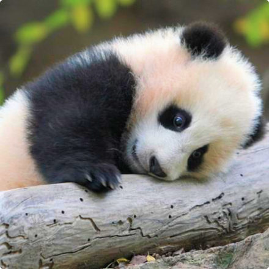

live panda cams
make the Bamboo Donation!
Our process for bamboo donations first starts with a site evaluation. It is important that our team sees where the bamboo is growing, then determining if the bamboo is a species that our animals are currently eating. Thank you for your interest in donating bamboo for our pandas.
Quick Donate
did you know?
Pandas are often seen eating in a relaxed sitting posture, with their hind legs stretched out before them. They may appear sedentary, but they are skilled tree-climbers and efficient swimmers.
Common name: Giant Panda
Scientific name: Ailuropoda melanoleuca
Type: Herbivore
syze: 4 to 5 feet
diet: Omnivore
Habitat: Forests
range: Eastern Asia

Giant pandas are very unusual animals that eat almost exclusively bamboo, which is very low in nutrients. Because of this, they have many unique adaptations for their low-energy lifestyle. Giant pandas are solitary. They have a highly developed sense of smell that males use to avoid each other and to find females for mating in the spring. After a five-month pregnancy, females give birth to a cub or two, though they cannot care for both twins. The blind infants weigh only 5 ounces at birth and cannot crawl until they reach three months of age. They are born white, and develop their much loved coloring later. Habitat loss is the primary threat to this species. Its popularity around the world has helped the giant panda become the focus of successful conservation programs.